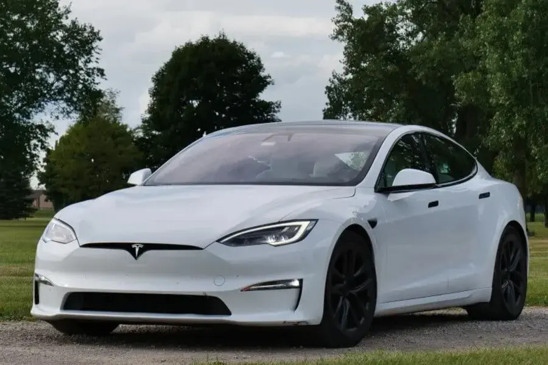

Robotik ve Otomasyon
Robotik ve otomasyon, günümüzde endüstriyel işlemleri ve hizmet sektörünü dönüştüren temel
teknolojilerdir.
Endüstriyel otomasyon, fabrika ortamlarında kullanılan robotlar aracılığıyla üretim süreçlerini
otomatikleştirerek verimliliği artırır ve işçilerin ağır veya tehlikeli görevlerden kaçınmasına olanak
tanır.

Yapay Et ve Sürdürülebilir Beslenme
Yapay et, geleneksel hayvansal etin tüketime olan etkisi ve sağlık üzerindeki etkileriyle ilgili çeşitli
avantajlar sunmaktadır. Öncelikle, sürdürülebilir beslenme açısından, yapay et üretimi daha az doğal
kaynak kullanımı gerektirir ve daha az sera gazı emisyonuna yol açar. Bu, çevresel etkileri azaltarak
iklim değişikliğiyle mücadelede önemli bir adımdır. Ayrıca, yapay etin üretimi geleneksel hayvansal ete
kıyasla daha kontrollü ve hijyeniktir, bu da gıda güvenliği ve kalitesini artırır.

Uzay Turizmi ve Kolonizasyon
Uzay turizmi ve kolonizasyon, insanlığın uzaya olan ilgisinin giderek artmasıyla birlikte önemli bir konu
haline gelmiştir. Uzay turizmi, insanların uzay yolculuklarına katılabilmelerini sağlayan bir endüstri
olarak tanımlanırken, uzay kolonizasyonu ise insanların uzayda yaşam kurmalarını ve uzaydaki
yerleşimleri hedefler.

Sentetik Biyoloji ve Biyomalzemeler
Sentetik biyoloji ve biyomalzemeler, biyolojik sistemlerin tasarımı ve manipülasyonuyla ilgilenen bir
alanı ifade eder. Bu alan, genellikle gen mühendisliği, sentetik biyoloji ve biyomalzeme bilimi gibi
disiplinlerin birleşiminden oluşur. Sentetik biyoloji, biyolojik sistemleri analiz etmek, anlamak ve
mühendislik uygulamaları için tasarlamakla ilgilenirken, biyomalzemeler ise biyolojik kökenli veya
biyolojik olarak uyumlu malzemelerin tasarımı ve senteziyle ilgilenir.

Hesaplamalı Biyoloji ve Genetik Mühendislik
Hesaplamalı biyoloji ve genetik mühendislik, biyolojik sistemlerin analizinde ve manipülasyonunda
bilgisayar modellemesi ve hesaplama yöntemlerinin kullanılmasını içeren disiplinlerdir. Bu alanlar,
genetik verilerin analiz edilmesi, biyolojik sistemlerin modellenmesi, genetik mühendislik
tasarımlarının oluşturulması ve biyolojik süreçlerin anlaşılması gibi birçok uygulamayı kapsar.

Havacılık ve Elektrikli Uçaklar
Havacılık endüstrisi, elektrikli uçaklar gibi yenilikçi teknolojilerle sürekli olarak evrim geçiriyor.
Elektrikli uçaklar, geleneksel içten yanmalı motorlara kıyasla daha çevre dostu ve sürdürülebilir bir
alternatif sunuyor. Bu teknoloji, uçuşlarda sera gazı emisyonlarını azaltırken, havacılık endüstrisinin
karbon ayak izini küçültmeye yardımcı olabilir.

Yapay Zeka ve İnsan Etkileşimi
Yapay zeka (YZ) ve insan etkileşimi, günümüz teknolojisinin en önemli ve dinamik alanlarından biridir.
YZ, insanlarla etkileşimde bulunmak için tasarlanmış bir dizi teknoloji ve uygulama içerir ve bu
etkileşim birçok şekilde gerçekleşebilir.

Tesla: Elektrikli Araçlarının Geleceği Şimdi!
Tesla, otomotiv endüstrisine getirdiği çığır açan elektrikli araçlarla tanınan bir marka olarak,
sürdürülebilir ve yenilikçi bir geleceği şekillendiriyor. Tesla'nın elektrikli araçları, gelişmiş
batarya teknolojileri ve otomatik sürüş yetenekleri ile öne çıkıyor. Model S, Model 3, Model X ve Model
Y gibi modeller, yüksek performans, uzun menzil ve şık tasarımlarıyla dikkat çekiyor.

Quantum Computing ve Veri Analitiği
Quantum computing, geleneksel bilgisayarların üzerinde çalıştığı temel prensiplerden farklı bir yaklaşım
benimseyen bir bilgi işlem modelidir. Klasik bilgisayarlar, bit adı verilen sıfır ve bir durumlarını
kullanarak bilgiyi işlerken, kuantum bilgisayarları, kubit adı verilen süperpozisyon durumundaki
parçacıkları kullanarak bilgiyi işler. Bu, kuantum bilgisayarlarının aynı anda birçok farklı hesaplama
yapabilme yeteneğine sahip olduğu anlamına gelir, bu da klasik bilgisayarlara kıyasla çok daha hızlı ve
karmaşık problemleri çözebilme potansiyeline sahip olduğu anlamına gelir.

MSI Laptop: Güçlü Performans ve İleri Teknoloji
MSI, bilgisayar endüstrisindeki güçlü konumuyla tanınan bir marka olarak, kullanıcılara üstün performans
ve ileri teknoloji sunan laptoplarıyla dikkat çekiyor. MSI laptopları, oyun tutkunlarından
profesyonellere kadar geniş bir kullanıcı kitlesine hitap eden güçlü işlemciler, yüksek performanslı
grafik kartları ve yenilikçi özelliklerle donatılmıştır.

PS5: Yeni Nesil Oyun Deneyimi
Sony'nin son oyun konsolu olan PlayStation 5 (PS5), oyun dünyasına getirdiği yüksek performans ve
yenilikçi özellikleriyle dikkat çekiyor. PS5, özel olarak tasarlanmış yüksek hızlı SSD'si sayesinde oyun
yükleme sürelerini minimize ederek kullanıcılara anında ve sorunsuz bir oyun deneyimi sunuyor. Grafik
açısından etkileyici olan yüksek çözünürlüklü oyunlar, hızlı işlemcisi ve ray tracing teknolojisi ile
gerçekçi görsel efektleri bir araya getiriyor.

Yenilenebilir Enerji Depolama
Yenilenebilir enerji kaynakları, güneş ve rüzgar gibi doğal kaynaklardan elde edilen enerjiyi kullanarak
elektrik üretiminde giderek daha fazla kullanılmaktadır. Ancak, yenilenebilir enerji kaynaklarının
değişken doğası nedeniyle (örneğin, güneş enerjisi güneş ışığının mevcudiyetine, rüzgar enerjisi ise
rüzgarın hızına bağlıdır), bu kaynaklardan elde edilen enerjiyi etkin bir şekilde kullanmak için enerji
depolama sistemlerine ihtiyaç vardır.